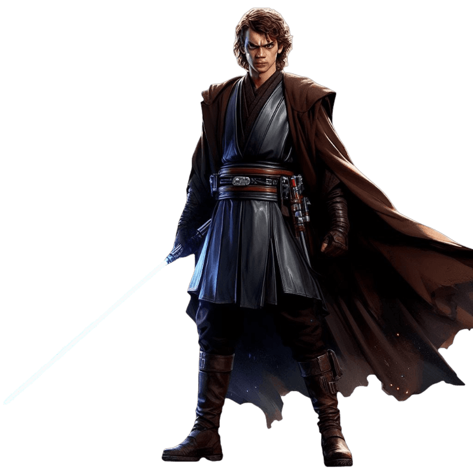
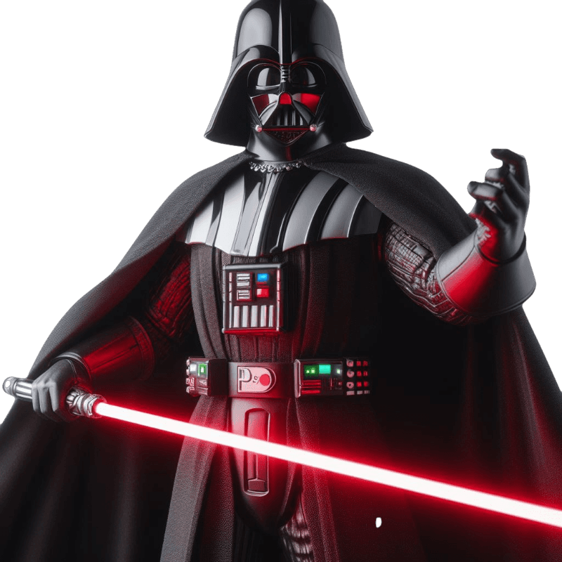
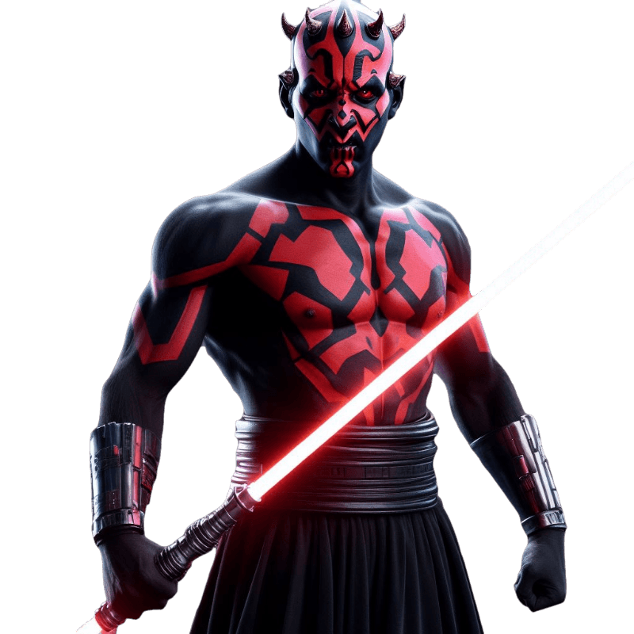
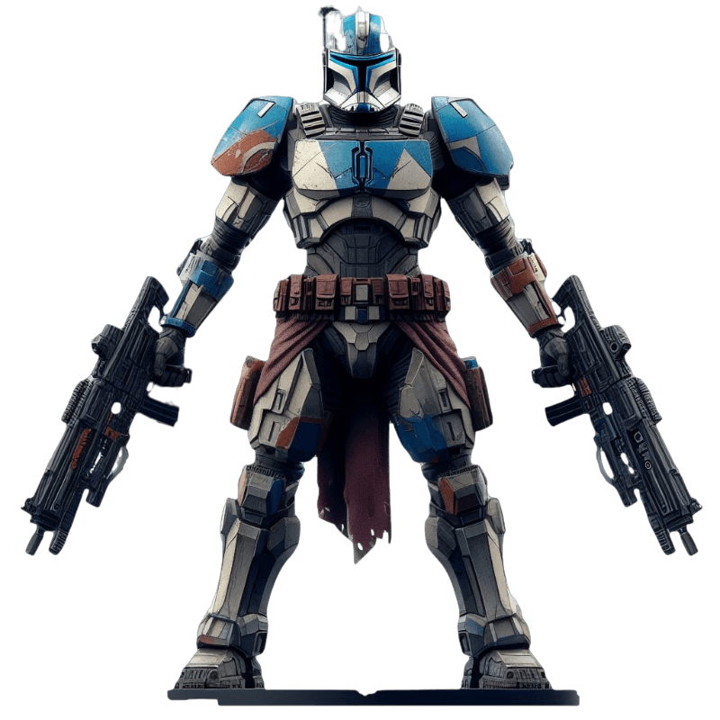

Hoy vamos a hablar sobre Star Wars, una de las mayores sagas de ciencia ficcion del mundo y mi favorita. Para ello voy a hablar sobre mis personajes favoritos pero antes una pequeña introducion
En una galaxia muy, muy lejana, la saga épica de Star Wars se desarrolla en un universo lleno de fuerza, conflictos galácticos y héroes legendarios. Todo comienza con "Una Nueva Esperanza", cuando un joven granjero llamado Luke Skywalker descubre su destino como un Jedi destinado a luchar contra las fuerzas oscuras del Imperio Galáctico. Junto a la princesa Leia Organa, el contrabandista Han Solo y sus leales compañeros droide, C-3PO y R2-D2, forman la Alianza Rebelde para enfrentarse al malvado Emperador Palpatine y su aprendiz Sith, Darth Vader.
La trilogía original nos lleva a través de las vicisitudes de la guerra, con momentos icónicos como la destrucción de la Estrella de la Muerte y la revelación impactante de que Darth Vader es el padre de Luke. La trilogía posterior, conocida como la trilogía de precuelas, explora el ascenso de Anakin Skywalker, el elegido destinado a equilibrar la Fuerza, pero que cae al lado oscuro como Darth Vader.
En la trilogía más reciente, la lucha entre la Resistencia y la Primera Orden se intensifica, con nuevos héroes como Rey, Finn y Poe Dameron tomando el relevo. Descubrimos los secretos del pasado de Rey, la conexión entre ella y Kylo Ren, así como el regreso del Emperador Palpatine, desencadenando una batalla final épica en "El Ascenso de Skywalker".
A lo largo de la saga, la Fuerza juega un papel crucial, manifestándose en personajes como Yoda, Obi-Wan Kenobi y Luke Skywalker. Star Wars no solo es una historia de batallas espaciales y duelos con sables de luz, sino también un viaje de autodescubrimiento, redención y el eterno conflicto entre el bien y el mal en una galaxia vasta y llena de maravillas. La fuerza siempre estará con nosotros, guiándonos a través de la oscuridad hacia la luz..
Sin duda uno de mis personajes favoritos de toda la saga,tanto el como Darth Vader, su historia es brutal y tiene un desarrolo de personaje que me encanta,puesto que un niño aparentemente inocenete se convierte en uno de los verdugos mas temidos de la galaxia
Es el elegido de la fuerza,profecia que terminaria decantando su caida al lado oscuro, puesto que la busqueda de ese poder junto con la busqueda de la salvacion de su mujer, provocarian su caida al reverso tenebroso de la fuerza
Me gusta mucho su forma agresiva de combate, ademas es un gran estratega como podemos ver en la serie de Clone Wars donde hace un gran trio con el capitan Rex y Ashoka Tano, auqnue poco despues se dedicaria a perseguirlo una vez ejecutada la orden 66 ya convertido en Darth Vader
El mejor villano de la historia del cine, se ve imponente y amenazador. Su icónica respiración asusta a cualquiera solo con escucharla, ademas se consigue que sea mas imponente debido a sus escasas apariciones.Fue uno de los mayores verdugos de la galaxia matando a miles de jedis e incluso personas con la estrella de la muerte
Nunca fue del todo malo, pero el emperador alimentaba su odio e ira para mantenerlo en el lado oscuro. Si lees los cómics te das cuenta de que lo único que quiere es volver a ver a su amada, que fue el motivo principal de su conversion,que se da en la ultima pelicula de la trilogia original, al salvar a su hijo Luke del emeprador dando su vida a cambio
Como curiosidad el nombre de Darth Vader, se podria traducir al español como padre oscuro, y cabe destacar que la mitica frase de "Yo soy tu padre" a pesar de lo que piensa la gente, nunca dice Luke, lo cual da lugar a lo que se llama un efecto mandela
Sin duda mi personaje favorito, su diseño es flipante, esos cuernos, y sobre todo su sable doble que es brutal. Mucha gente piensa que murió en La Amenaza Fantasma, pero "resucitó" en la serie de Clone Wars por eso este villano es poco conocido, pero que por ejemplo fue capaz de reventar un venator el solo
Durante dicha, se muestra todo su potencial, ya que consumido por la venganza, sobrevive con el unico deseo de matar a Kenobi, lo cual llevara a numerosos arcos en los que intenta matarle junto a su hermano Savagge.Ademas de su rivalidad con Kenobi, desarrola una con la padawan de Anakin Ashoka una de mis rivalidads favoritas de la saga puesto que da lugar a un combate epico
A pesar del lo que se pueda creer, no es un Sith, es mas el odia a los Sith, pues estos le abandonaron cuando le dieron por muerto y por ello ha llegado a ponerles en jaque, cuando conquisto Mandalore o con sus numerosas organizaciones criminales, por ejemplo el Crime Some D'Ome.
Es poco conocido ya que aparece en Clone Wars, es el líder de la legión 501, fiel amigo de Ahsoka Tano y Anakin Skywalker, además de un valiente soldado con unos altos ideales que ha ayudado en numerosas veces a toda la orden Jedi.Sobrevivio a la orden 66 ya que al no ejecutarla era un traidor para el imperio y posteriormente ayudo a la rebelion a derrocar al imperio.
La serie de Clone Wars ademas ayuda a empatizar, con los clones puesto que en las peliculas, son vistos como simples numeros pero se descubre que en verdad sosn personas normales que tienen ocio, sentimientos, personalidad propia...Son fieles a los Jedis hasta la tragica orden 66 donde les traicionan debido a su chip inibidor
Su relacion de amistad con Lady Thano, da lugar a un momento emotivo de la saga cuando este es obligado a matarla pero el se resiste y la ayuda a escapar, a cambio Ashoka, le retira su chip inibidor, alli se separan, prometen volver a encontrarse cosa que se daria 17 anos despues .
